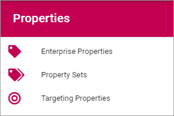
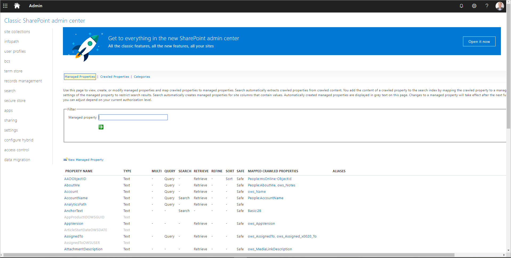
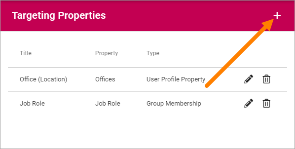
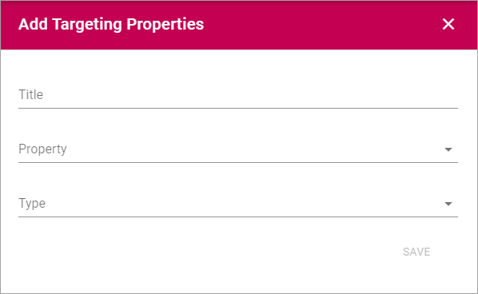

Properties¶
The following is found here:
Enterprise Properties¶
Here you add ALL Properties that should be used within the Tenant. If you, for example, would like to enable targeting, the Properties to be used for targeting must be added here.

Adding a Property¶
To add a Property, click the plus.

Use the following settings:

- Title: Add a Title (name) for the Property. Default language is mandatory. Add Titles in the other Tenant Languages as needed.
- Internal name: An internal name can or should in some instances be used instead of the Title, for example as a place holder. The internal name can not contain spaces.
- Type: Select the Property type. It can be Data, Datetime, Enterprise Keywords, Media, “Person”, Rich text, Taxonomy, Text or Yes/No. Most of the Types are self explanatory. “Data” is a system field that users never enter anything to. “Rich text” can be formatted by the editor. “Text” is plain text that the editor can not format.
Note! Properties used for targeting mus be of the “Taxonomy” type.
Mapping a user profile property¶
In order to map an Omnia property to a user profile property, we need to first find the user profile property in sharepoint. In order to do that, lets look at this example:
Here we will try mapping the property Department:

In order to access this view, follow these steps:
- Visit the sharepoint admin center by typing in https://((insert the name of your tenant)-admin.sharepoint.com
- Click on user profiles in the left menu.
- Click on Manager user profiles.
- Type in the name of the user you wish to inspect.
In order for a user profile property to be used in omnia, it has to be mapped first, and in order for it to be mapped, we need to know the name of the property, which can be found in search:

We then go in to Manage search Schema:
We then type in the name of the property we are looking for, which in this case is Department:

Here we can see on the left the name of the Managed property is indeed Department, and the crawled properties are People:Department and ows_department.
We also notice that department is of type Text, it is also queryable, retrievable and refinable but not searchable or sortable, which means that when we map it on omnia, it needs to have the same attrbutes if we want it have the same functionality as it does now. Mapping it looks like the following:

Department is now a usable property that functions as both a value displayer and a refiner in blocks like People roll up and features like the search.
Use the dust bin to delete a property, or the pen to edit one:

Note that some Properties can not be deleted, but they can be edited. For them only the pen is shown.
Property Sets¶
This is as the name says, an option where you can create sets of several Enterprise Properties and handle the set instead of each individual property. As a first step Property Sets is implemented for Controlled Documents.
A list of useful Property Sets can already be in place, for example:

To edit a Property Set, click the pen. To delete a Property Set, click the dust bin.
When you edit a Property Set, something like the following can be shown:

This set consists of two Properties; Document Owner and Office.
The settings are used the same way as when creating a new set, see below.
Creating a new Property Set¶
To create a new Property Set, do the following:
- Click the plus.
Use the following settings:

- Add a Title for the Property Set. You can add a title in all langauges active in the tenant. Default language is mandatory.
- Open the list and select a Property.
- Click “Add”.

- Set additional settings for the Property, if required.

- Continue the same way until you have added all the properties for the set.
- To change the order, grab a property by the icon to the far right, and drop the property where you want it.

- When you’re finished, click “Save”.

Targeting Properties¶
Here you define which Properties to use for Targeting.

The Properties must be added to the Enterprise Properties list to be able to be used here, as well as be of the type “Taxonomy”.
Add a Target Property¶
To add a Target Property definition, click the plus:
Use the following settings:
- Title: Add the Title to be shown for editors, for the Property, when targeting.
- Property: Select Tenant Property from the list.
- Type: Select Type of targeting for this Property; Group Membership, User Profile Property or Azure AD Property.
Delete or edit Target Property¶
To delete a Target Property, click the dust bin, to edit it, click the pen: